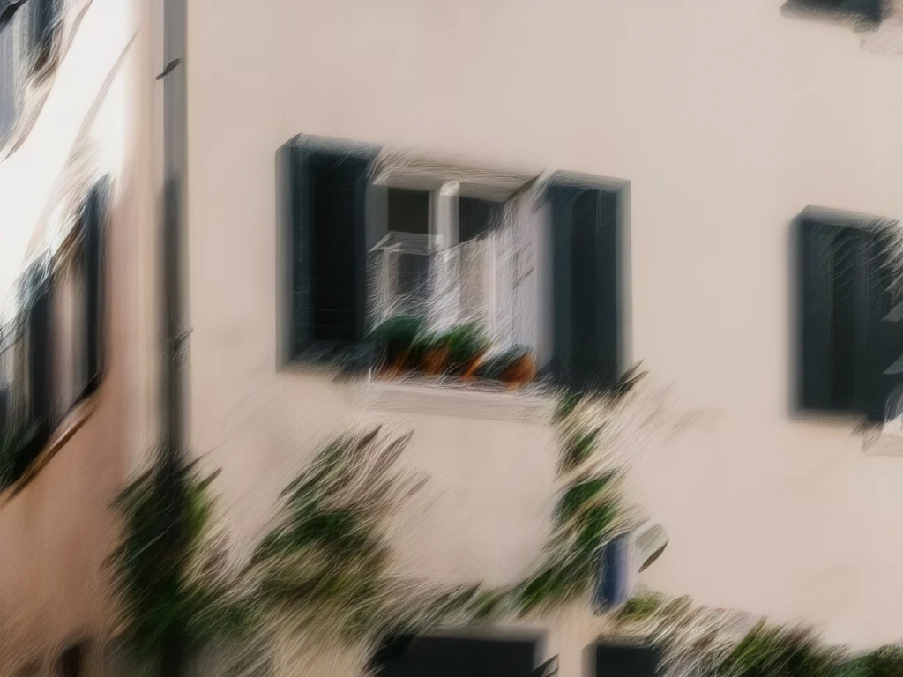
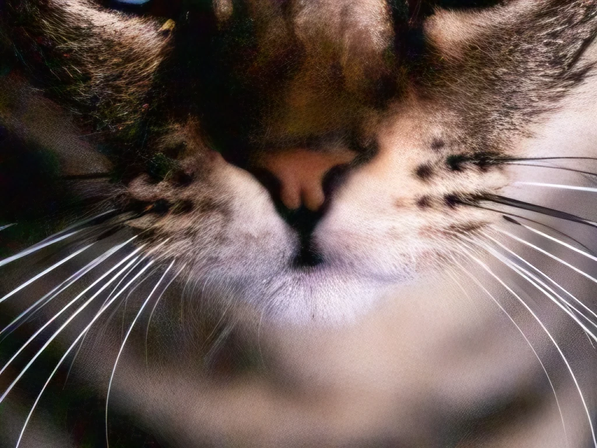
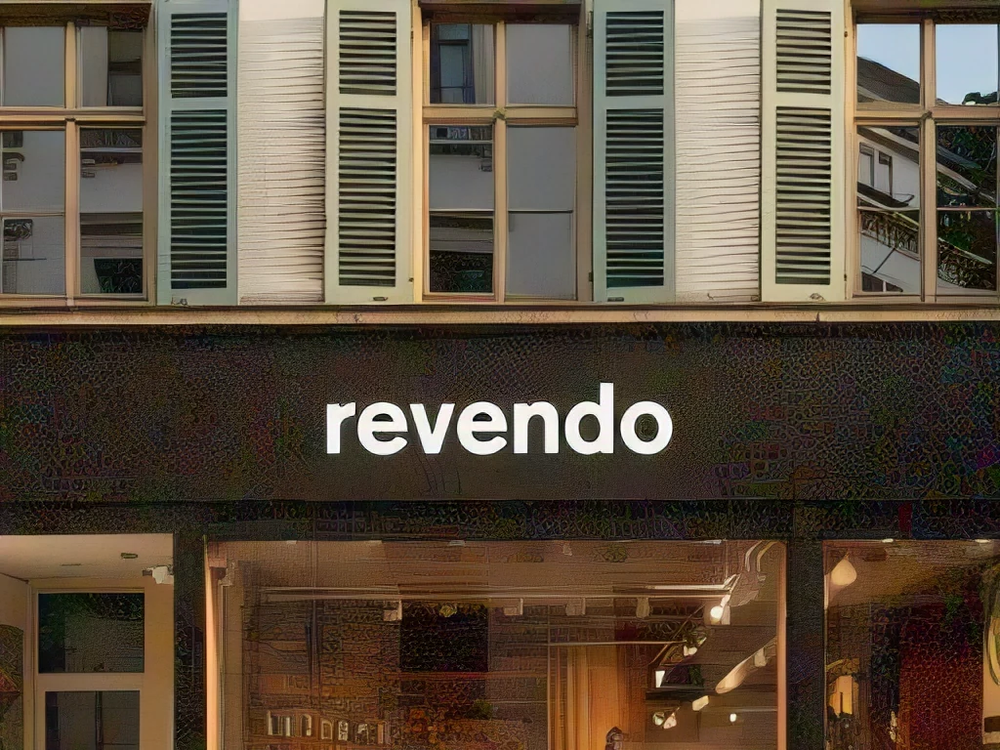
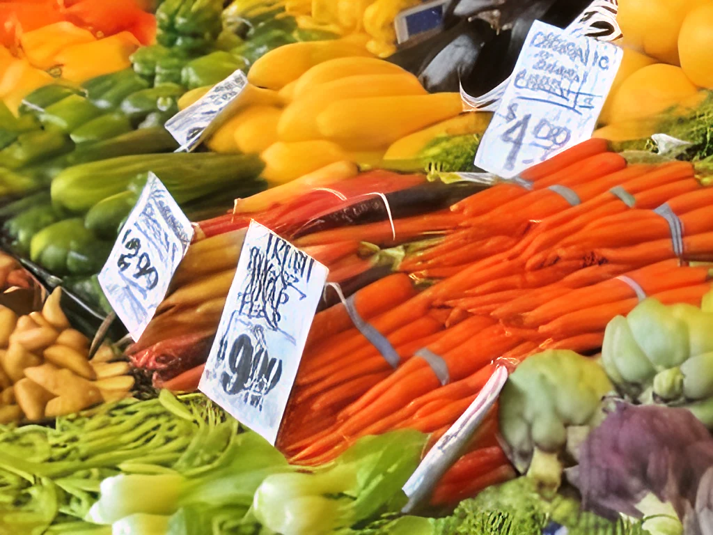
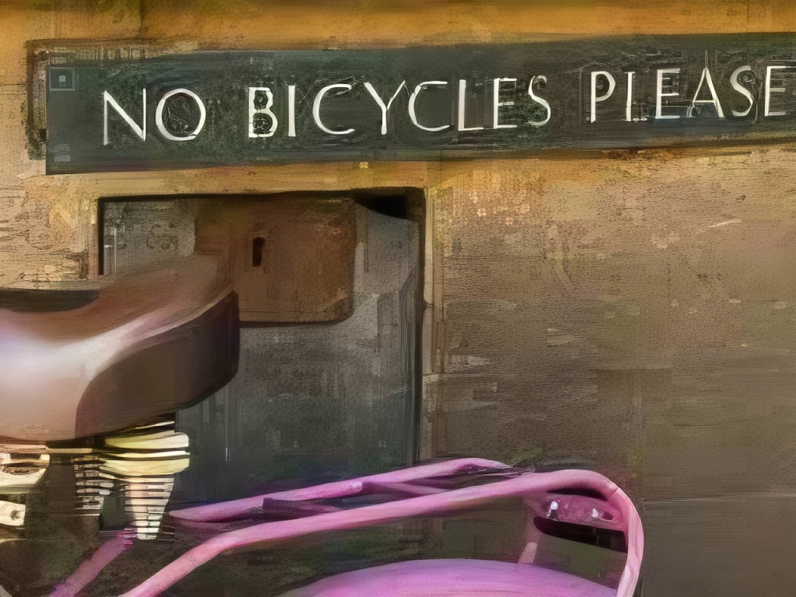
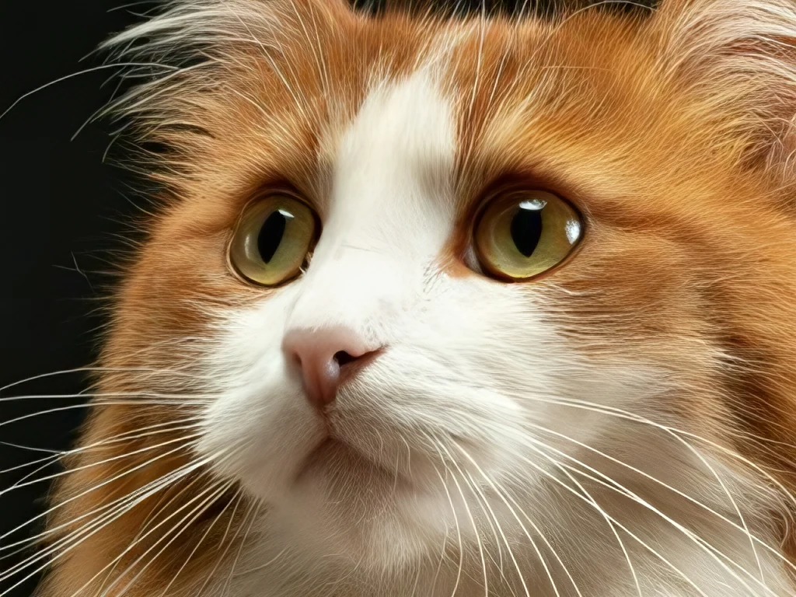

Which model for which photo
What to use depends on what is wrong with the photo. For each kind of damage this page shows the built-in choice, the one model worth adding if there is one, and every model I measured. Pick any two results above a photo to compare them. Each table is sorted by the first half of my test photos, and its numbers come from the second half, compared with Best, LocalSR's default photo model (RealPLKSR NomosWebPhoto). How I tested
Blurred photos: the Blur fix, then Best
Turn on Blur under Fix first. NAFNet then removes the blur and Best enlarges the photo. That was closer to the original than Best alone on 28 of 29 test photos, and none of the downloaded models I tested did better.

Best
NAFNet deblur, then Best


Best
NAFNet deblur, then Best
| Model | From | Closer than Best | PSNR vs Best | Time, about |
|---|---|---|---|---|
| NAFNet deblur, then Best (RealPLKSR NomosWebPhoto) | built in | 28 of 29 | +1.7 dB | 0.1 s |
| 4xBHI DAT2 multiblurjpg | community | 25 of 29 | -0.2 dB | 2.1 s |
| NAFNet deblur, then 4xBHI DAT2 real | built in and community | 25 of 29 | +2.6 dB | 1.8 s |
| NAFNet deblur, then 4xNomos2 hq DAT2 | built in and OpenModelDB | 24 of 29 | +2.2 dB | 1.7 s |
| NAFNet deblur, then HAT-L | built in | 22 of 29 | +2.3 dB | 3.8 s |
| Best (RealPLKSR NomosWebPhoto) | built in | baseline | baseline | 0.1 s |
| 4xBHI DAT2 real | community | 10 of 29 | +0.5 dB | 1.7 s |
| 4xRealWebPhoto v4 DAT2 | OpenModelDB | 9 of 29 | +0.4 dB | 2.3 s |
| 4xNomos2 hq DAT2 | OpenModelDB | 9 of 29 | +0.2 dB | 1.7 s |
| 4xNomosWebPhoto ATD | OpenModelDB | 4 of 29 | +0.1 dB | 3.3 s |
| HAT-L | built in | 9 of 29 | +0.3 dB | 3.7 s |
Noisy photos: 4xRealWebPhoto v4
Built in, Best alone did better than the denoise steps on these photos. If you add one model, take 4xRealWebPhoto v4 DAT2 by Philip Hofmann (CC BY 4.0) from OpenModelDB. It was closer than Best on 27 of 29 test photos.


Best
4xRealWebPhoto v4 DAT2 (OpenModelDB)


Best
4xRealWebPhoto v4 DAT2 (OpenModelDB)
| Model | From | Closer than Best | PSNR vs Best | Time, about |
|---|---|---|---|---|
| 4xRealWebPhoto v4 DAT2 | OpenModelDB | 27 of 29 | +0.6 dB | 2.3 s |
| 4xBHI DAT2 real | community | 22 of 29 | +1.3 dB | 1.7 s |
| 4xBHI DAT2 otf | community | 24 of 29 | +1.9 dB | 2.1 s |
| Best (RealPLKSR NomosWebPhoto) | built in | baseline | baseline | 0.1 s |
| SCUNet, then Best (RealPLKSR NomosWebPhoto) | built in | 8 of 29 | +0.4 dB | 0.1 s |
| 4xNomosWebPhoto ATD | OpenModelDB | 17 of 29 | -0.0 dB | 3.3 s |
| 1xDeNoise, then Best (RealPLKSR NomosWebPhoto) | built in | 4 of 29 | -2.1 dB | 0.1 s |
| SCUNet, then 4xNomos2 hq DAT2 | built in and OpenModelDB | 5 of 29 | +0.9 dB | 1.8 s |
| 1xDeNoise, then 4xNomos2 hq DAT2 | built in and OpenModelDB | 2 of 29 | -3.6 dB | 1.8 s |
| 4xNomos2 hq DAT2 | OpenModelDB | 1 of 29 | -0.4 dB | 1.7 s |
| NAFNet denoise, then Best (RealPLKSR NomosWebPhoto) | built in | 3 of 29 | -0.4 dB | 0.1 s |
| NAFNet denoise, then 4xNomos2 hq DAT2 | built in and OpenModelDB | 0 of 29 | -1.0 dB | 1.8 s |
Lettering and buildings: 4xBHI DAT2 real
Built in, Best does better here than HAT-L and Quick. If you add one model, take 4xBHI DAT2 real, a community model by Philip Hofmann (CC BY 4.0). It was closer than Best on 19 of 24 test photos and 1.7 dB ahead.


Best
4xBHI DAT2 real (community)


Best
4xBHI DAT2 real (community)
| Model | From | Closer than Best | PSNR vs Best | Time, about |
|---|---|---|---|---|
| 4xBHI DAT2 real | community | 19 of 24 | +1.7 dB | 1.7 s |
| Best (RealPLKSR NomosWebPhoto) | built in | baseline | baseline | 0.1 s |
| 4xRealWebPhoto v4 DRCT-L | OpenModelDB | 4 of 24 | +0.2 dB | 7.0 s |
| Quick (SPAN NomosUni) | built in | 0 of 24 | +0.7 dB | 0.0 s |
| 4xNomos2 hq DAT2 | OpenModelDB | 0 of 24 | -0.1 dB | 1.7 s |
| 4xNomos2 hq ATD | OpenModelDB | 0 of 24 | +0.3 dB | 3.3 s |
| 4xNomos2 hq DRCT-L | OpenModelDB | 1 of 24 | +0.1 dB | 6.2 s |
| 4xBHI small HAT-L | community | 0 of 24 | -1.9 dB | 3.7 s |
| HAT-L | built in | 0 of 24 | -0.3 dB | 3.7 s |
| HAT-S | built in | 0 of 24 | +0.1 dB | 1.4 s |
Recompressed JPEGs: 4xBHI DAT2 otf
Built in, Best alone is the better start, FBCNN first did not help here. If you add one model, take 4xBHI DAT2 otf (CC BY 4.0), which ranked first. It was closer than Best on 23 of 29 test photos. 4xRealWebPhoto v4 DAT2 ranked third but did even better on the second half (26 of 29), and it is also the model for noisy photos, so one download covers both.

Best
4xBHI DAT2 otf (community)

Best
4xBHI DAT2 otf (community)
| Model | From | Closer than Best | PSNR vs Best | Time, about |
|---|---|---|---|---|
| 4xBHI DAT2 otf | community | 23 of 29 | +1.0 dB | 2.1 s |
| 1xDeJPG, then Best (RealPLKSR NomosWebPhoto) | built in and OpenModelDB | 22 of 29 | -0.0 dB | 0.1 s |
| 4xRealWebPhoto v4 DAT2 | OpenModelDB | 26 of 29 | +1.2 dB | 2.3 s |
| Best (RealPLKSR NomosWebPhoto) | built in | baseline | baseline | 0.1 s |
| 1xDeJPG, then 4xBHI DAT2 real | community and OpenModelDB | 20 of 29 | +0.5 dB | 1.8 s |
| 4xBHI DAT2 real | community | 17 of 29 | +0.7 dB | 1.7 s |
| 4xBHI DAT2 multiblurjpg | community | 17 of 29 | +1.0 dB | 2.1 s |
| 4xRealWebPhoto v4 DRCT-L | OpenModelDB | 14 of 29 | +0.2 dB | 7.0 s |
| 4xNomos8k ATD jpg | OpenModelDB | 14 of 29 | +1.4 dB | 3.3 s |
| 4xNomosWebPhoto ATD | OpenModelDB | 9 of 29 | -0.2 dB | 3.3 s |
| 1xDeJPG, then 4xNomos2 hq DAT2 | OpenModelDB | 11 of 29 | -1.0 dB | 1.8 s |
| Quick (SPAN NomosUni) | built in | 8 of 29 | +1.2 dB | 0.0 s |
| FBCNN, then Best (RealPLKSR NomosWebPhoto) | built in | 11 of 29 | +0.3 dB | 0.1 s |
| FBCNN, then 4xNomos2 hq DAT2 | built in and OpenModelDB | 5 of 29 | +2.1 dB | 1.7 s |
| FBCNN, then HAT-L | built in | 1 of 29 | +2.9 dB | 3.8 s |
| 4xNomos2 hq DAT2 | OpenModelDB | 0 of 29 | +0.3 dB | 1.7 s |
| HAT-L | built in | 0 of 29 | +0.8 dB | 3.7 s |
Clean photos: 4xBHI DAT2 real
Built in, SwinIR is a little better than Best, closer on 19 of 29. If you add one model, take 4xBHI DAT2 real (CC BY 4.0). It was closer than Best on 20 of 29 test photos and 1.6 dB ahead.


Best
4xBHI DAT2 real (community)
| Model | From | Closer than Best | PSNR vs Best | Time, about |
|---|---|---|---|---|
| 4xBHI DAT2 real | community | 20 of 29 | +1.6 dB | 1.7 s |
| 4xBHI DAT2 multiblurjpg | community | 25 of 29 | +1.6 dB | 2.1 s |
| SwinIR-M real | built in | 19 of 29 | +0.5 dB | 2.9 s |
| Best (RealPLKSR NomosWebPhoto) | built in | baseline | baseline | 0.1 s |
| Real-ESRGAN x4plus | built in | 15 of 29 | +0.3 dB | 0.2 s |
| 4xNomos2 hq DAT2 | OpenModelDB | 8 of 29 | +1.0 dB | 1.7 s |
| 4xNomos2 hq DRCT-L | OpenModelDB | 7 of 29 | +1.1 dB | 6.2 s |
| 4xNomos2 hq ATD | OpenModelDB | 8 of 29 | +1.1 dB | 3.3 s |
| Quick (SPAN NomosUni) | built in | 2 of 29 | +1.1 dB | 0.0 s |
| 4xBHI small HAT-L | community | 4 of 29 | -0.3 dB | 3.7 s |
| HAT-L | built in | 0 of 29 | +1.9 dB | 3.7 s |
How I tested
- The same 60 test photos per kind of damage as on the comparison with Upscayl: reduced to a quarter, damaged, enlarged 4× again and compared with the original.
- The table lists the models in the order they did on the first half of the photos. Its numbers come from the other half: how often a model was closer to the original than Best (by DISTS), and the PSNR difference to Best.
- Time is the median of seven runs after two warm-up runs, for one 256 × 192 photo enlarged to 1024 × 768 on an AMD RX 9060 XT with PyTorch in fp32, with the model already loaded and no file reading or writing. On a Mac, Quick runs on the Neural Engine and Best through Core ML on the GPU; I did not time those here.
- Models from OpenModelDB and community models are not part of LocalSR. You can load them as your own model in the model library.